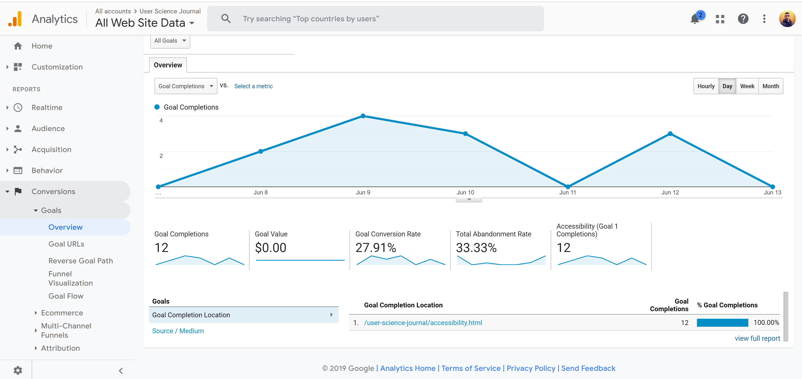
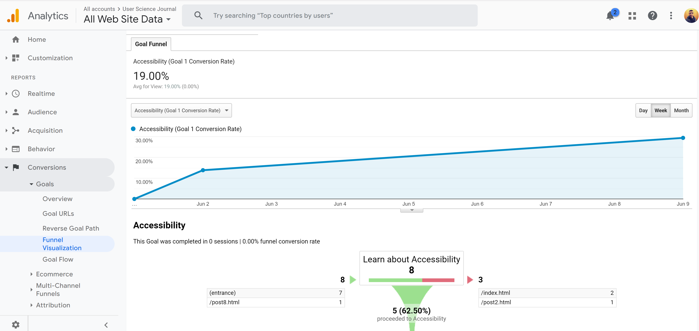
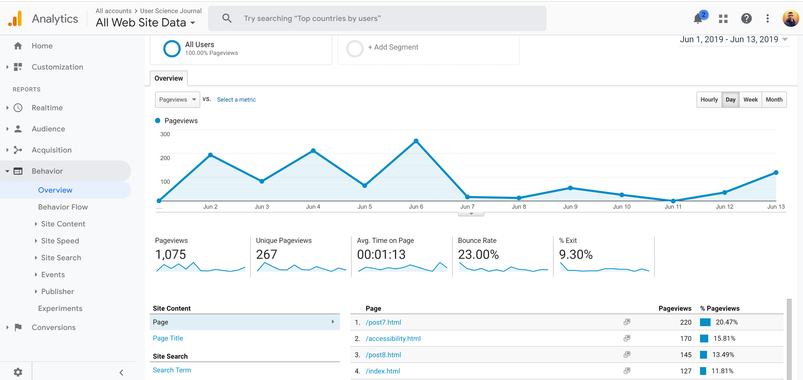
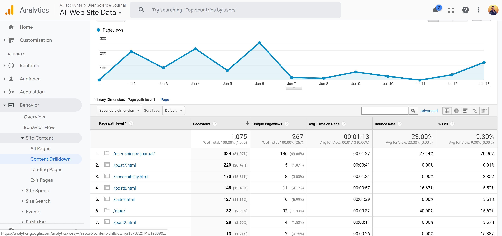

Analyzing results from the experiment.
Yes, users are completing my goal by clicking on the link and watching the video. User are stopping at the Accessibility page watching the video and going back to main page. In this particular case the path or funnel to complete my goal is a twostep process which very simple and straight forward. Setting up content experiment consists of: the experiment-setup wizard, list of experiments, and individual reports for each experiment.

Benefits of Content Experiment.
With Content Experiments, you can:
- Compare how different web pages or app screens perform using a random sample of your users
- Define what percentage of your users are included in the experiment
- Choose which objective you’d like to test
- Get updates by email about how your experiment is doing

Some of the suggestions from usability test were to make placement changes, use larger font size, and button with color. Since the testers had seen both versions of my goal, they had good ideas of changes they would like to see. For example, instead of having a link that redirects the user to different page having the Accessibility video on the main page. My main take away from user testing on goal experiment is to always keep design focus on user. I can take their suggestion and further add another experiment and evaluate those results to have supporting data before I implement final changes.

I am definitely going to increase the font size of the link on my homepage and add color so it is more visible. Also going to follow Google’s Testing Guidelines: test only few elements, use high-volume pages, make bold changes, and keep testing. Overall process of setting up the content experiment was simple, variant wizard tool was easy is easy to use and you can choose what level you want to make changes.
